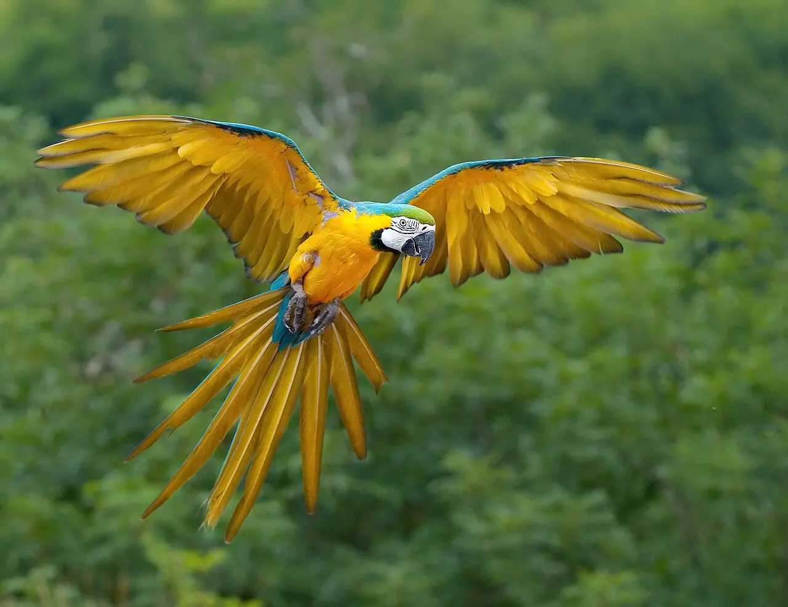
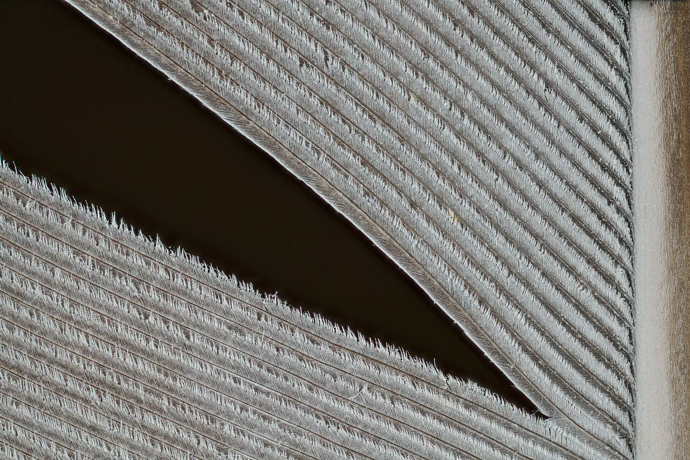
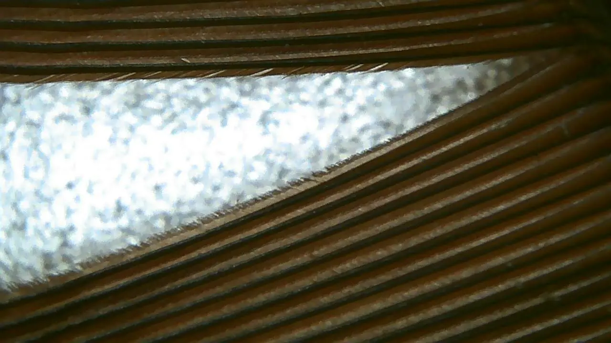
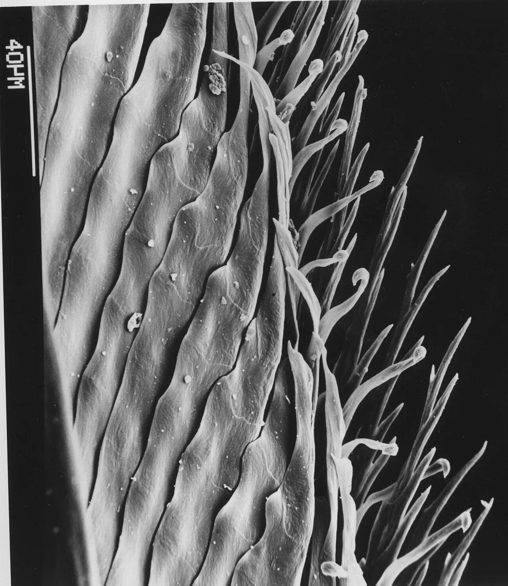
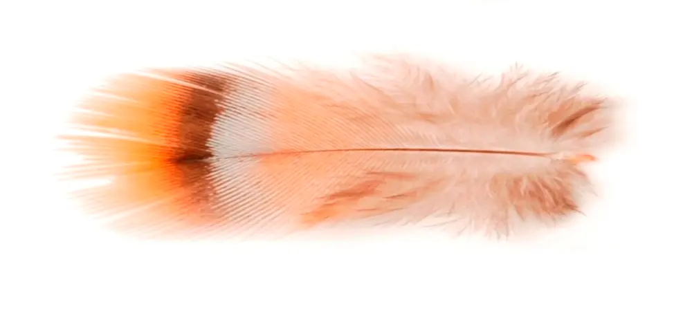
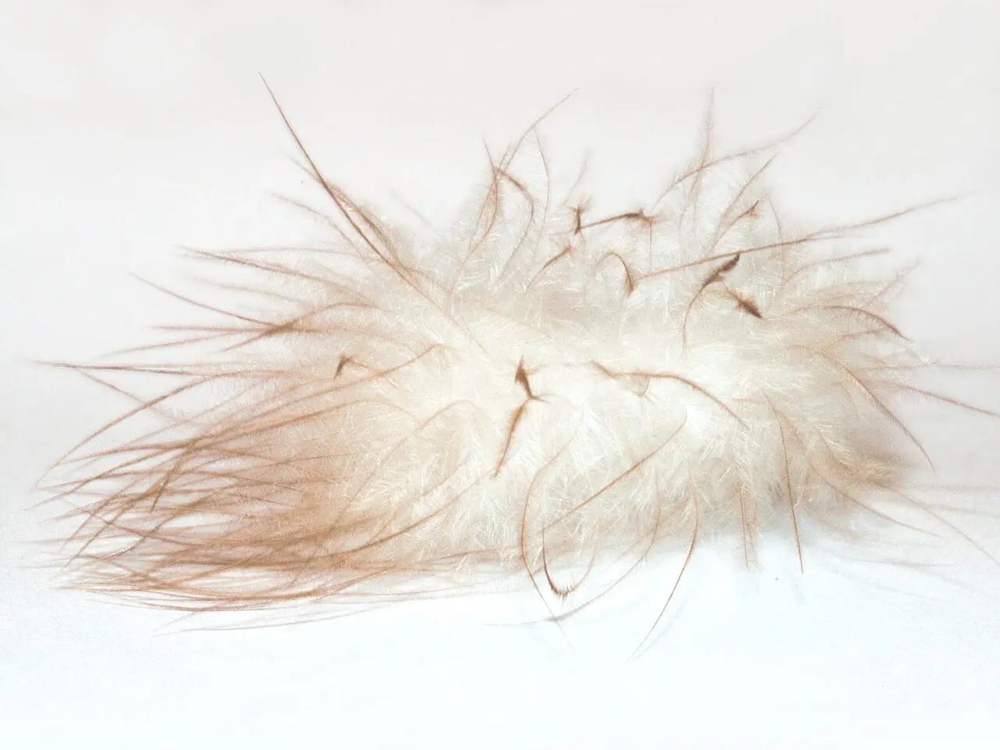
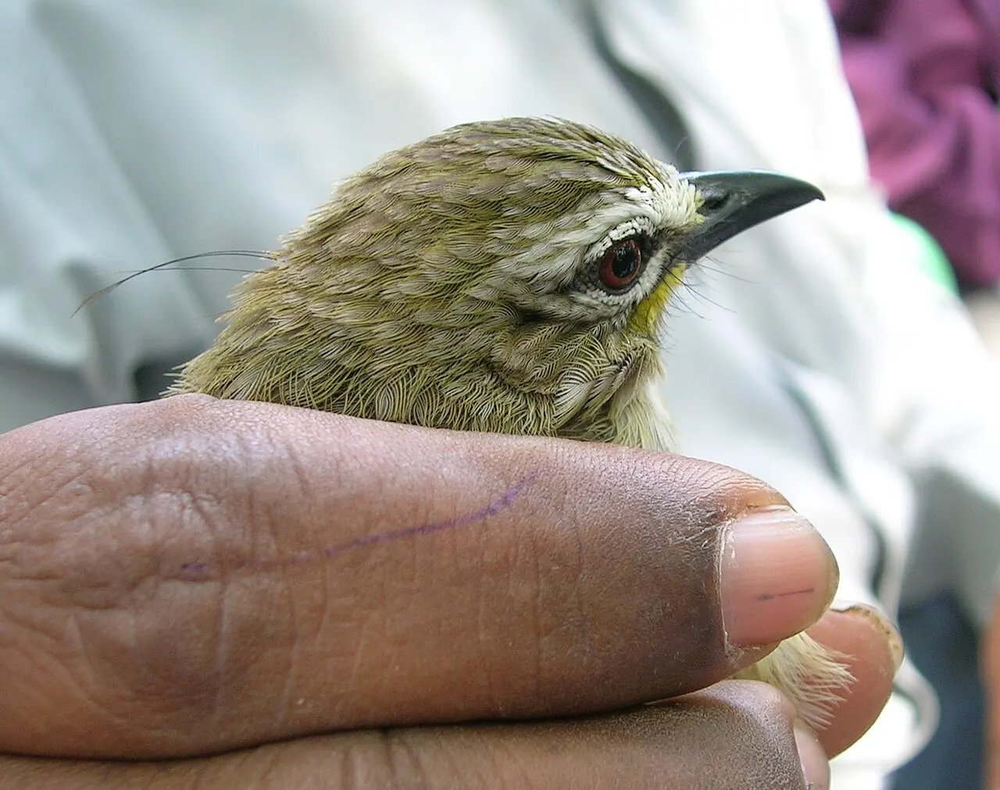

Módulo 1 Aula 4
As penas
Uma pena parece simples. De perto, é uma das estruturas mais engenhosas da natureza: leve, resistente, impermeável e consertável.
- As partes de uma pena e como elas se encaixam
- Os tipos de pena e para que cada um serve
- Como a ave cuida das penas e as troca

Ave da aula
Arara-canindé Ara ararauna
Anatomia de uma pena
Toda pena é feita de , a mesma proteína do bico e das nossas unhas. Ela tem um cano oco preso à pele, o , que continua como uma haste, a . Da raque saem as , e das barbas saem ramos ainda menores, as [1].
Escolha uma parte para destacá-la.
Esquema de uma pena de contorno, sem escala.
Aproxime a lente: nas fotos abaixo, a mesma pena vista em três aumentos. Na primeira, a raque com uma fenda entre as barbas. Na segunda, barbas e bárbulas. Na terceira, os ganchinhos que prendem uma bárbula na outra.

Raque e barbas
A raque atravessa a pena. As barbas saem dos dois lados, todas na mesma direção. Aqui há uma fenda: quando as barbas se separam, a lâmina perde a continuidade.

Barbas e bárbulas
Cada barba tem dezenas de bárbulas, dos dois lados. É ali que a pena ganha a estrutura de tecido.

Os ganchinhos
As bárbulas de uma barba têm minúsculos ganchos que se encaixam nas da barba vizinha, como um fecho de velcro[1]. É isso que dá à pena uma superfície contínua.
O zíper das barbas
Como os ganchos são só encaixes, a lâmina da pena pode abrir. Puxe o controle abaixo para separar as barbas e depois toque em “Alisar”: é o que a ave faz ao passar a pena pelo bico[4].
Esquema didático de barbas paralelas; a pena real tem centenas delas.
Tipos de pena
Nem toda pena é igual. Cada tipo tem uma função[1]:
Penas de voo
As longas e rígidas da asa () e da cauda (). São assimétricas: o lado da frente é mais estreito, o que ajuda a cortar o ar.

Penas de contorno
Na foto, uma pena de contorno: lâmina firme na ponta e barbas macias na base. Cobrem o corpo e dão a forma lisa e a cor que você vê. Também moldam a asa em um perfil aerodinâmico, alisando a região onde as penas de voo se prendem ao osso.

Penugem
Penas macias e fofas, como as da foto, sem raque central quase nenhuma. Ficam mais perto do corpo e prendem o calor, isolando do frio.

Filoplumas, cerdas e penas de pó
Na foto, os fios finos que saem da cabeça da ave são filoplumas. Há penas muito finas, as filoplumas, que funcionam como bigodes e ajudam a ave a sentir a posição das penas de contorno[1]. Há cerdas rígidas em volta dos olhos e do bico. E há as penas de pó, que se desfazem em um pó fino usado para limpar e impermeabilizar[2].
Cuidados e muda
Penas não se curam depois de prontas. Por isso as aves gastam tempo cuidando delas. Muitas passam o bico numa glândula perto da base da cauda, a , e espalham o óleo pela plumagem[3]. Algumas aves não têm essa glândula, como o avestruz e o emu[3].
Quando a pena se desgasta ou quebra, ela precisa ser trocada inteira. Essa troca é a [5]. A muda pode ser completa ou só de parte das penas[6]. O tempo varia: algumas aves, como as águias, levam até 5 anos para chegar à plumagem adulta[5].
De onde vem a cor? Pigmentos e estrutura da pena trabalham juntos. Voltamos a isso na aula 20, sobre cor e exibição[7].
Palavras novas
Teste rápido
Sem nota. Se errar, tente de novo.
O que prende uma barba na barba vizinha?
Para que serve a penugem?
O que a ave faz quando uma pena se desgasta?
Referências e leitura complementar
Onde conferir o que foi dito nesta aula. Os números entre colchetes no texto levam a estas fontes. Os links abrem em outra aba.
- Everything You Need To Know About FeathersBird Academy · Cornell Lab of Ornithology · inglêsEstrutura da pena: cálamo, raque, barbas e bárbulas, e os tipos de pena.
- Powder downEncyclopaedia Britannica · inglêsPenas que se desfazem em pó fino e ajudam a limpar e impermeabilizar a plumagem; bem desenvolvidas em cacatuas.
- Preen glandEncyclopaedia Britannica · inglêsA glândula uropigiana produz o óleo que a ave espalha nas penas para limpá-las e impermeabilizá-las.
- PreeningEncyclopaedia Britannica · inglês · leitura complementarComo as aves cuidam das penas com o bico.
- The Basics: Feather MoltAll About Birds · Cornell Lab of Ornithology · inglêsPor que e como as aves trocam as penas.
- Understanding the Basics of Bird MoltsAudubon Magazine · inglês · leitura complementarTipos de muda: completa e parcial.
- How Birds Make Colorful FeathersBird Academy · Cornell Lab of Ornithology · inglêsPigmentos, estrutura da pena e cor.
Os endereços foram abertos e conferidos em 29/09/2026. Alguns sites de revistas científicas e de órgãos oficiais exigem verificação humana e não puderam ser testados por robô. Sites externos podem mudar ou sair do ar.
Para levar
Em três frases
- Uma pena tem cálamo, raque e barbas, e as bárbulas com ganchos prendem as barbas como um zíper.
- Há penas de voo, de contorno, penugem e outras, cada uma com uma função.
- As penas não se curam: a ave as limpa, as arruma com o bico e as troca na muda.